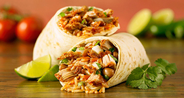

Burrito
Contexto Histórico
Acredita-se que há muitos anos, na cidade de Chihuahua, no México, havia uma barraca de comida que pertencia a Juan Mendez, na fronteira do país com os Estados Unidos, mais precisamente perto do Rio Bravo. Alguns mexicanos foram morar do lado americano devido à revolução, e o contato com o lado mexicano se dava aos gritos, que questionavam como estava o país e também por meio da comida, já que o cheiro atravessava a fronteira.
Como os muchachos adoravam a comida de Juan, começaram a fazer pedidos. Mas até atravessar o rio, as comidas chegavam frias aos clientes. Foi aí que o cozinheiro resolveu enrolar carne, feijão, alface e alguns tipos de molhos em discos de trigo ou milho, as famosas tortillas – ou tortilhas – , e colocava tudo em sacolas. Dessa forma, a comida chegava quente ao destinatário. Mas outro problema surgiu: as encomendas foram aumentando e Juan não conseguia mais atender tanta demanda, sem falar que ela ainda tinha que levar as sacolas com as encomendas até a fronteira. Então o cozinheiro teve outra ideia. Comprou um burro para auxiliá-lo. A partir daí, as tortilhas enroladas passaram a ser chamadas de burrito

Ingredientes:
1/3 de xícara de de chá de óleo
1/4 de xícara de chá de cebola picada
1 dente de alho amassado
Pimenta a gosto
250 g de molho de tomate
4 xícaras de chá de feijão cozido
2 xícaras de chá de carne de galinha cozida e desfiada
1 1/2 xícara de chá de queijo ralado
MODO DE PREPARO:
Junte 1 colher de sopa de óleo à mesma frigideira onde foram feitas as tortillas.
Acrescente a cebola e o alho.
Frite até que a cebola doure e acrescente a pimenta.
Junte o molho de tomate e aqueça.
Acrescente 1 xícara de feijão e amasse bem com um garfo.
Junte mais um pouco de óleo e mais um pouco do feijão, aquecendo e amassando novamente e continue até terminar o óleo e o feijão.
Divida o frango em 12 porções.8. Coloque 1 porção no meio de cada tortilla.
Cubra com umas 3 colheres de sopa da mistura de feijão.
Dobre um lado da tortilla sobre o recheio. Dobre o outro lado por cima.
Dobre as duas outras extremidades para formar um embrulho